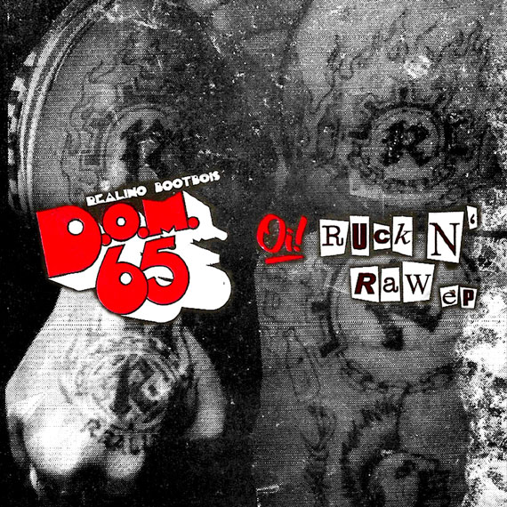

DOM 65 Rilis Ulang Album Mini “Oi! Ruck N’ Raw” Melalui Yes No Wave Netlabel (CC BY-NC-SA)
Setelah merilis satu album penuh dengan tembang-tembang baru pada tahun 2009 lalu, Unit punk rock asal Yogyakarta, DOM 65, bersama Yes No Wave Netlabel melakukan perilisan ulang mini album kedua yang sebelumnya dirilis oleh Realino Records pada tahun 2001. Realino Records merupakan cikal bakal aktivitas Wok The Rock (salah satu pendiri Yes No Wave) di bidang label rekaman. Label rekaman fisik ini kemudian bertransformasi menjadi label rekaman internet pada tahun 2007 dengan melihat kecenderungan pendengar musik yang giat berbagi mp3 dan membeli kaos band daripada membeli rilisan fisik. Dengan mendengarkan album ini, Anda akan mengetahui gaya bermusik DOM 65 yang lebih minimalis sebelum bergeser ke arah yang lebih progresif di album-album setelahnya. Perilisan album ini nantinya akan diikuti dengan perilisan 2 album lain DOM 65 yang sebelumnya dirilis dalam format fisik oleh Ruckson Music.
Seluruh album musik yang dirilis oleh Yes No Wave Netlabel berlisensi CC Atribusi-NonKomersial-BerbagiSerupa (BY-NC-SA) yang artinya:

BY (Atribusi): Anda harus mencantumkan nama yang sesuai, mencantumkan tautan terhadap lisensi, dan menyatakan bahwa telah ada perubahan yang dilakukan. Anda dapat melakukan hal ini dengan cara yang sesuai, namun tidak mengisyaratkan bahwa pemberi lisensi mendukung Anda atau penggunaan Anda.
NC (NonKomersial): Anda tidak dapat menggunakan materi ini untuk kepentingan komersial.
SA (BerbagiSerupa): Apabila Anda menggubah, mengubah, atau membuat turunan dari materi ini, Anda harus menyebarluaskan kontribusi Anda di bawah lisensi yang sama dengan materi asli.
Unduh mini album “Oi! Ruck N’ Raw” di tautan berikut.

Perilisan mini album DOM 65 adalah bagian dari perayaan 10 tahun Yes No Wave Netlabel.
Tags:
Oleh: Creative Commons Indonesia
6 Aug 2017Kategori:
Berita Terbaru
- Lokakarya Hak Cipta dan Lisensi Creative Commons di Pekanbaru
- Pengumuman Resmi: Hasil Akhir Training of Trainers Creative Commons Indonesia
- Literatur tentang Model Bisnis Terbuka "Made With CC"
- Data dan Artikel Ilmiah Terbuka dari PLOS!
- Konten Format Model 3 Dimensi Berilsensi CC di Platform Sketchfab